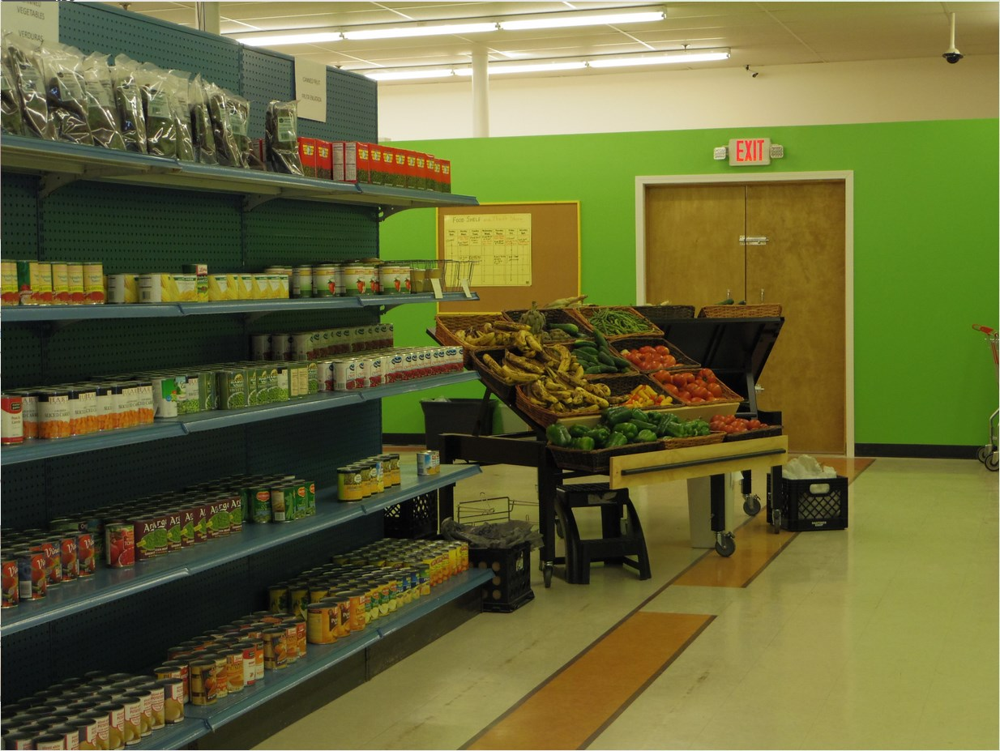

Before making a donation, please check our Facebook page or call us to ensure we can accept it.
About Us
Our Mission:
We provide food and clothing to people in need through the generosity of our community.
Who Are We?
We are a nonprofit 501(c)3 organization, established in 1986. We are staffed by volunteers and a board of directors. Our organization has grown to include the COME Meal (the Community Meal for Everyone) and the Happy Kids Back Pack program.
We receive food, clothing, monetary donations, and assistance from many organizations and individuals throughout the community. Thank you to all.
Who Do We Work With?
New Richmond Ministerial Association, AmpleHarvest
WestCAP, Human Services / St. Croix County
United Way of St. Croix Valley, Grace Place
Food Resource Collaborative of St.Croix County
Salvation Army, Second Harvest
Wal-mart, Family Fresh
Lakeside Foods, UW Extension
Volunteering
Thank you for your interest in the Five Loaves organization. We are passionate about fighting hunger in our community, and we rely upon community volunteers who generously donate their time. We have a wide-range of opportunities including working with clients, working with a friend, or even working on your own. All of these opportunities help feed people right here in your community.

Food Shelf Volunteers
Five Loaves Food Shelf volunteers help by welcoming clients to the food shelf, assisting them with paperwork, assisting them with food choices, keeping shelves full, receiving and unloading deliveries, and making sure the food is properly stocked and stored before each shift.
The Food Shelf volunteer opportunities are limitless. To become a food shelf volunteer, please complete the online application.
Two Fish Thrift Store volunteers help by accepting, sorting, and pricing donations to be placed on the sales floor. They also assist customers shopping and check them out.
All sales at the Two Fish Thrift Store allows Five Loaves to be able to purchase food for the food shelf. Each dollar raised at Two Fish allows Five Loaves to purchase $6.00 worth of food.
There are many opportunities and times available to volunteer, please contact Michelle at 715-246-0066 or 2fishcontacts@gmail.com